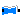

FixedShape2


SignalArrow
Package Visualizers contains components to visualize 3-dimensional shapes. These components are the basis for the animation features of the MultiBody library.
| FixedShape FixedShape2 |
Animation shape of a part with fixed sizes. FixedShape2 has additionally
a frame_b for easier connection to further visual objects.
The following shape types are supported:
|
| FixedFrame | Visualizing a coordinate system including axes labels with fixed sizes:
|
| FixedArrow, SignalArrow |
Visualizing an arrow. Model "FixedArrow" provides
a fixed sized arrow, model "SignalArrow" provides
an arrow with dynamically varying length that is defined
by an input signal vector: |
| Advanced | Package that contains components to visualize 3-dimensional shapes where all parts of the shape can vary dynamically. Basic knowledge of Modelica is needed in order to utilize the components of this package. |
The colors of the visualization components are declared with the predefined type MultiBody.Types.Color. This is a vector with 3 elements, {r, g, b}, and specifies the color of the shape. {r,g,b} are the "red", "green" and "blue" color parts. Note, r g, b are given as Integer[3] in the ranges 0 .. 255, respectively.
Extends from Modelica.Icons.Library (Icon for library).
| Name | Description |
|---|---|
| Animation shape of a part with fixed shape type and dynamically varying shape definition | |
|  FixedShape2 | Animation shape of a part with fixed shape type and dynamically varying shape definition with two frames |
| Visualizing a coordinate system including axes labels (visualization data may vary dynamically) | |
| Visualizing an arrow with dynamically varying size in frame_a | |
| SignalArrow | Visualizing an arrow with dynamically varying size in frame_a based on input signal |
| Visualizers that require basic knowledge about Modelica in order to use them |
 Modelica.Mechanics.MultiBody.Visualizers.FixedShape
Modelica.Mechanics.MultiBody.Visualizers.FixedShape
Model FixedShape defines a visual shape that is
shown at the location of its frame_a.
All describing data such as size and color can vary dynamically by
providing appropriate expressions in the input fields of the
parameter menu. The only exception is parameter shapeType
that cannot be changed during simulation.
The following shapes are currently supported via
parameter shapeType (e.g., shapeType="box"):

The dark blue arrows in the figure above are directed along
variable lengthDirection. The light blue arrows are directed
along variable widthDirection. The coordinate systems
in the figure represent frame_a of the FixedShape component.
Additionally external shapes are specified as DXF-files (only 3-dim.Face is supported). External shapes must be named "1", "2" etc.. The corresponding definitions should be in files "1.dxf", "2.dxf" etc.Since the DXF-files contain color and dimensions for the individual faces, the corresponding information in the model is currently ignored. The DXF-files must be found in the current directory.
The sizes of any of the above components are specified by the length, width and height variables. Via variable extra additional data can be defined:
| shapeType | Meaning of parameter extra |
|---|---|
| "cylinder" | if extra > 0, a black line is included in the cylinder to show the rotation of it. |
| "cone" | extra = diameter-left-side / diameter-right-side, i.e., extra = 1: cylinder extra = 0: "real" cone. |
| "pipe" | extra = outer-diameter / inner-diameter, i.e, extra = 1: cylinder that is completely hollow extra = 0: cylinder without a hole. |
| "gearwheel" | extra is the number of teeth of the gear. |
| "spring" | extra is the number of windings of the spring. Additionally, "height" is not the "height" but 2*coil-width. |
Parameter color is a vector with 3 elements, {r, g, b}, and specifies the color of the shape. {r,g,b} are the "red", "green" and "blue" color parts. Note, r g, b are given as Integer[3] in the ranges 0 .. 255, respectively. The predefined type MultiBody.Types.Color contains a temporary menu definition of the colors used in the MultiBody library (this will be replaced by a color editor).
Extends from Modelica.Mechanics.MultiBody.Interfaces.PartialVisualizer (Base model for visualizers (has a frame_a on the left side + outer world + assert to guarantee that the component is connected)).
| Name | Description |
|---|---|
| animation | = true, if animation shall be enabled |
| if animation = true | |
| shapeType | Type of shape |
| r_shape[3] | Vector from frame_a to shape origin, resolved in frame_a [m] |
| lengthDirection | Vector in length direction of shape, resolved in frame_a [1] |
| widthDirection | Vector in width direction of shape, resolved in frame_a [1] |
| length | Length of shape [m] |
| width | Width of shape [m] |
| height | Height of shape [m] |
| color | Color of shape |
| extra | Additional data for cylinder, cone, pipe, gearwheel and spring |
| specularCoefficient | Reflection of ambient light (= 0: light is completely absorbed) |
| Name | Description |
|---|---|
| frame_a | Coordinate system in which visualization data is resolved |
 Modelica.Mechanics.MultiBody.Visualizers.FixedShape2
Modelica.Mechanics.MultiBody.Visualizers.FixedShape2
Model FixedShape2 defines a visual shape that is
shown at the location of its frame_a. This model is identical
to FixedShape with the only difference that an
additional frame_b is present which is parallel to frame_a.
This makes it more convenient to connect several visual
shapes together when building up more complex visual
objects. All describing data such as size and color can vary dynamically by
providing appropriate expressions in the input fields of the
parameter menu. The only exception is parameter shapeType
that cannot be changed during simulation.
The following shapes are currently supported via
parameter shapeType (e.g., shapeType="box"):
The dark blue arrows in the figure above are directed along
variable lengthDirection. The light blue arrows are directed
along variable widthDirection. The coordinate systems
in the figure represent frame_a of the FixedShape component.
Additionally external shapes are specified as DXF-files (only 3-dim.Face is supported). External shapes must be named "1", "2" etc.. The corresponding definitions should be in files "1.dxf", "2.dxf" etc.Since the DXF-files contain color and dimensions for the individual faces, the corresponding information in the model is currently ignored. The DXF-files must be found in the current directory.
The sizes of any of the above components are specified by the length, width and height variables. Via variable extra additional data can be defined:
| shapeType | Meaning of parameter extra |
|---|---|
| "cylinder" | if extra > 0, a black line is included in the cylinder to show the rotation of it. |
| "cone" | extra = diameter-left-side / diameter-right-side, i.e., extra = 1: cylinder extra = 0: "real" cone. |
| "pipe" | extra = outer-diameter / inner-diameter, i.e, extra = 1: cylinder that is completely hollow extra = 0: cylinder without a hole. |
| "gearwheel" | extra is the number of teeth of the gear. |
| "spring" | extra is the number of windings of the spring. Additionally, "height" is not the "height" but 2*coil-width. |
Parameter color is a vector with 3 elements, {r, g, b}, and specifies the color of the shape. {r,g,b} are the "red", "green" and "blue" color parts. Note, r g, b are given as Integer[3] in the ranges 0 .. 255, respectively. The predefined type MultiBody.Types.Color contains a temporary menu definition of the colors used in the MultiBody library (this will be replaced by a color editor).
In the following figure the relationships between frame_a and frame_b are shown. The origin of frame_b with respect to frame_a is specified via parameter vector r.

| Name | Description |
|---|---|
| animation | = true, if animation shall be enabled |
| if animation = true | |
| shapeType | Type of shape |
| r_shape[3] | Vector from frame_a to shape origin, resolved in frame_a [m] |
| lengthDirection | Vector in length direction of shape, resolved in frame_a [1] |
| widthDirection | Vector in width direction of shape, resolved in frame_a [1] |
| length | Length of shape [m] |
| width | Width of shape [m] |
| height | Height of shape [m] |
| extra | Additional data for cylinder, cone, pipe, gearwheel and spring |
| color | Color of shape |
| specularCoefficient | Reflection of ambient light (= 0: light is completely absorbed) |
| Name | Description |
|---|---|
| frame_a | Coordinate system a (all shape definition vectors are resolved in this frame) |
| frame_b | Coordinate system b |
Model FixedFrame visualizes the three axes of
its coordinate system frame_a together with appropriate axes
labels. A typical example is shown in the following figure:

The sizes of the axes, the axes colors and the specular coefficient (= reflection factor for ambient light) can vary dynamically by providing appropriate expressions in the input fields of the parameter menu.
Extends from Modelica.Mechanics.MultiBody.Interfaces.PartialVisualizer (Base model for visualizers (has a frame_a on the left side + outer world + assert to guarantee that the component is connected)).
| Name | Description |
|---|---|
| animation | = true, if animation shall be enabled |
| if animation = true | |
| showLabels | = true, if labels shall be shown |
| length | Length of axes arrows [m] |
| diameter | Diameter of axes arrows [m] |
| color_x | Color of x-arrow |
| color_y | Color of y-arrow |
| color_z | Color of z-arrow |
| specularCoefficient | Reflection of ambient light (= 0: light is completely absorbed) |
| Name | Description |
|---|---|
| frame_a | Coordinate system in which visualization data is resolved |
 Modelica.Mechanics.MultiBody.Visualizers.FixedArrow
Modelica.Mechanics.MultiBody.Visualizers.FixedArrow
Model FixedArrow defines an arrow that is
shown at the location of its frame_a.
The direction of the arrow specified with vector n is with respect to frame_a, i.e., the local frame to which the arrow component is attached. The direction and length of the arrow, its diameter and color can vary dynamically by providing appropriate expressions in the input fields of the parameter menu.
Extends from Modelica.Mechanics.MultiBody.Interfaces.PartialVisualizer (Base model for visualizers (has a frame_a on the left side + outer world + assert to guarantee that the component is connected)).
| Name | Description |
|---|---|
| animation | = true, if animation shall be enabled |
| if animation = true | |
| r_tail[3] | Vector from frame_a to arrow tail, resolved in frame_a [m] |
| n | Vector in arrow direction, resolved in frame_a [1] |
| length | Length of complete arrow [m] |
| diameter | Diameter of arrow line [m] |
| color | Color of arrow |
| specularCoefficient | Reflection of ambient light (= 0: light is completely absorbed) |
| Name | Description |
|---|---|
| frame_a | Coordinate system in which visualization data is resolved |
Model SignalArrow defines an arrow that is dynamically visualized
at the location where its frame_a is attached. The
position vector from the tail to the head of the arrow,
resolved in frame_a, is defined via the signal vector of
the connector r_head (Real r_head[3]):
The tail of the arrow is defined with parameter r_tail with respect to frame_a (vector from the origin of frame_a to the arrow tail).
Extends from Modelica.Mechanics.MultiBody.Interfaces.PartialVisualizer (Base model for visualizers (has a frame_a on the left side + outer world + assert to guarantee that the component is connected)).
| Name | Description |
|---|---|
| animation | = true, if animation shall be enabled |
| if animation = true | |
| r_tail[3] | Vector from frame_a to arrow tail, resolved in frame_a [m] |
| diameter | Diameter of arrow line [m] |
| color | Color of arrow |
| specularCoefficient | Reflection of ambient light (= 0: light is completely absorbed) |
| Name | Description |
|---|---|
| frame_a | Coordinate system in which visualization data is resolved |
| r_head[3] | Position vector from origin of frame_a to head of arrow, resolved in frame_a [m] |